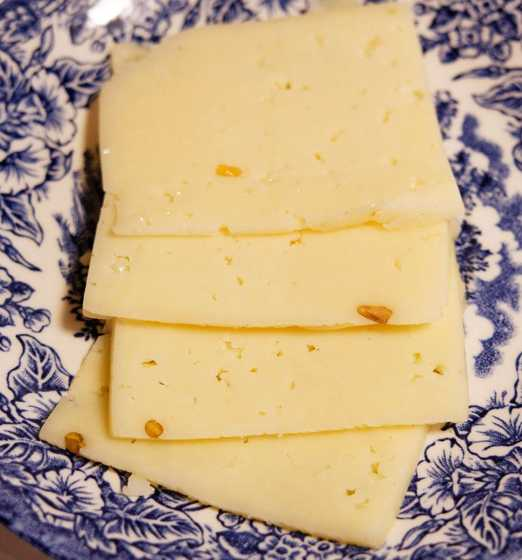
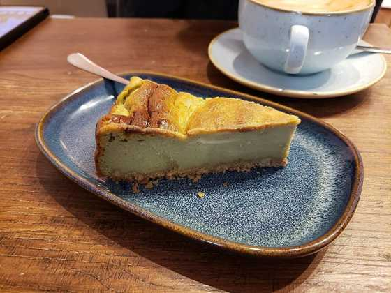
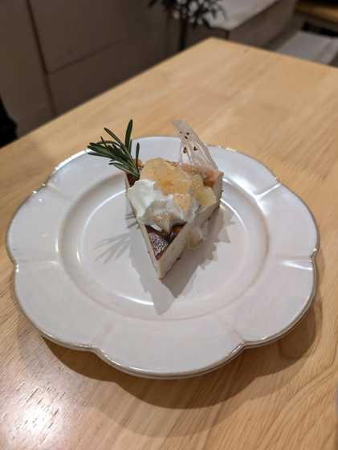
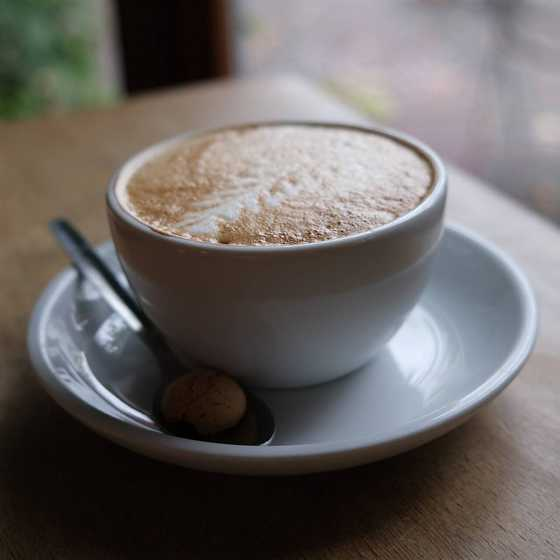
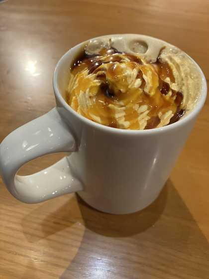
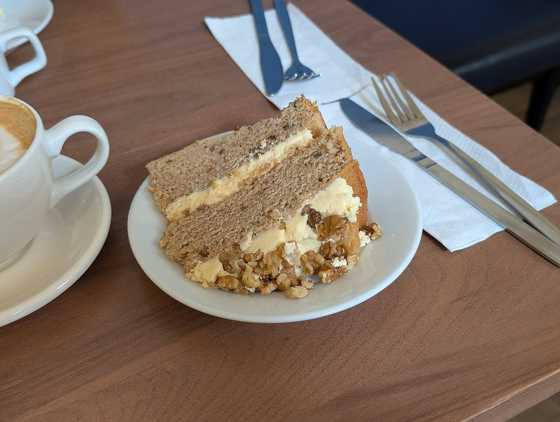

栃木県那須塩原市・黒磯駅近くのチーズ喫茶
チーズとコーヒーを、
ゆっくり合わせる時間を。
元チーズ職人でバリスタの店主が、国産ナチュラルチーズとスペシャルティコーヒーのペアリングを楽しめる喫茶店です。
メニュー
取材記事で紹介されていた内容です。最新のメニューはInstagramでご確認ください。
価格: 準備中








写真はフリー素材のイメージです。店舗の実際の様子・実際の提供品ではありません。
口コミ イメージ例
以下は制作側が作成した創作で、実在のお客様の声ではありません。
イメージ例
チーズケーキとコーヒーの組み合わせを、店主さんの説明を聞きながら選べるのが楽しかったです。
イメージ例
駅から歩いてすぐ。お昼にチーズ入りのメニューをいただいて、ほっとひと息つけました。
イメージ例
器もすてきで、ゆっくり過ごせる時間でした。また季節ごとのメニューを試しに来たいです。
お店のこと
「チーズ喫茶 うし時々やぎ」は、那須塩原市のまちなか交流センター「くるる」内にあるお店です。店主は元チーズ職人で、現在はバリスタとしても活躍されているとのこと。国産ナチュラルチーズとスペシャルティコーヒーのペアリングを軸にした喫茶店として紹介されています。
市の創業支援事業で選ばれ、くるる内のスペースで2026年2月にプレオープン、3月にグランドオープンしました。2028年12月までの期間限定の営業とされています。益子焼の器など食器にもこだわっているそうです。
出典: 下野新聞デジタル、ごぎゅネット(那須塩原・大田原)、那須塩原市の案内。店名の由来は確認できなかったため記載していません。
| 営業時間 | 10:00〜19:00(取材記事より。変更の可能性あり) |
|---|---|
| 定休日 | 月曜・火曜(同上) |
| 電話 | 準備中 |
アクセス
| 住所 | 〒325-0056 栃木県那須塩原市本町6-32(まちなか交流センター くるる内) |
|---|---|
| 最寄り | 黒磯駅から徒歩約4分 |
| @cheese_ushi.yagi |